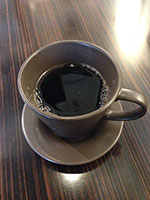

このコンテンツは、テンプレートとして複数のページで使われています。
このページのカスタム項目1は、 site()->get_current_page_info('custom1') ); ?> です。
site()->get_current_page_info('custom1') ); ?>
このページのカスタム項目2は、 site()->get_current_page_info('custom2') ); ?> です。
site()->get_current_page_info('custom2') ); ?>

トップページへ遷移